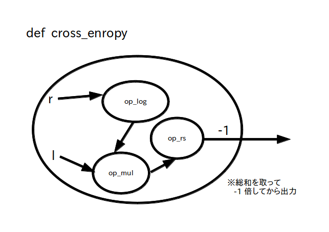

teacher : 教師信号、 L x N 行列 (定数テンソル)
※ $t_{\rm ji}$ ＝ 訓練データセット No.j の教師信号において入力層のパーセプトロン No.i に入力される信号

前ページで 3 層ニューラルネットワークのデータフロー・グラフを作りましたが、隠れ層と出力層の重みやバイアス( w_h、b_h、w_o、b_o の4つ) は乱数で初期化していますので、このままでは入力信号 data を入力しても全く意味の無い出力信号 y_o が出力されます。
したがって、何らかの入力信号を与えた時に理想的な出力がされるように「ディープラーニング」を使ってニューラルネットワークを学習(＝重みやバイアスを適切な値を変化させる)必要があります。
改めて書くと、ディープラーニングの定義は
「教師信号が与えられた時にそれに対応する理想的な信号が出力されるようにニューラルネットワークの重みやバイアスなどのパラメータ値を更新する機械学習(マシンラーニング)の手法の一つ」
です。
ここで「教師信号」とは文字通りニューラルネットワークを教育するための教師役となる信号のことで「説明変数」と呼ぶこともあります。
一方、ある教師信号を与えたときの理想的な出力信号のことを「目的変数」と呼びますが、特に「多クラス分類問題」を扱う場合は目的変数の事を「ラベル」と呼んでいます。
今回はこの「多クラス分類問題」を取り扱います。
※ 教師信号を用いる学習のことを「教師あり学習」と呼びます。
逆に教師信号が無い機械学習の事を「教師なし学習」と言いますが今回は取り扱いません。
なお学習を行うためには教師信号とラベルの組(「訓練データセット」と呼びます)を複数用意する必要があります。
今回は訓練データセットが No.0 から No.(L-1) まで L 組あることにします。
まず教師信号について考えます。
教師信号全体の名前を teacher とすると、訓練データセットのサイズが L で、今考えている 3 層ニューラルネットワークの入力層のパーセプトロンの個数は N 個でしたので、 teacher は LxN 行列
\[ {\rm teacher} = \begin{bmatrix} t_{00} \ , & \cdots &,\ t_{\rm 0(N-1)} \\ \vdots & \ddots & \vdots \\ t_{\rm (L-1)0} , & \cdots &,\ t_{\rm (L-1)(N-1)} \\ \end{bmatrix} \]となります。
よって TensorFlow では教師信号は図 1 の様に L x N 行列の定数テンソルで定義され、
「teacher の j 行 i 列目の値 $t_{\rm ji}$ は訓練データセット No.j の教師信号において入力層のパーセプトロン No.i に入力される信号」
を表します。
teacher : 教師信号、 L x N 行列 (定数テンソル)
※ $t_{\rm ji}$ ＝ 訓練データセット No.j の教師信号において入力層のパーセプトロン No.i に入力される信号
次はラベルについて考えます。
今考えている 3 層ニューラルネットワークの出力層のパーセプトロンの個数は M 個で、訓練データセットのサイズは L としましたので、 ラベル全体の名前を label とすると、label は LxM 行列
\[ {\rm label} = \begin{bmatrix} l_{00}\ , & \cdots &,\ l_{\rm 0(M-1)} \\ \vdots & \ddots & \vdots \\ l_{\rm (L-1)0} \ , & \cdots &,\ l_{\rm (L-1)(M-1)} \\ \end{bmatrix} \]で表すことができます。
さて、このラベルの値をどのように決めるかについては色々な形式があるのですが、今回は「one-hot ベクトル形式」を使いたいと思います。
one-hot ベクトル形式とは、あるクラスに属する場合は 1、それ以外は 0 とする様にラベルを決める形式です。
例えばニューラルネットワークに入力された画像を「猫」と「犬」と「鳥」の 3 クラスに分類したい場合を考えてみましょう。
この場合は、M = 3 とし、訓練データセット No.j における教師信号が猫(クラス No.0 とします)の画像だったら $l_{j0} = 1$ 、犬の画像(クラス No.1 とします)だったら $l_{j1} = 1$ 、鳥の画像(クラス No.2 とします)だったら $l_{j2} = 1$ 、それ以外は 0 の値を label にセットします。
つまり
猫ラベル(クラス No.0)・・・ [1,0,0]
犬ラベル(クラス No.1)・・・ [0,1,0]
鳥ラベル(クラス No.2)・・・ [0,0,1]
とします。
この様に TensorFlow ではラベル label は図 2 の様に L x M 行列の定数テンソルで定義され、
「label の j 行 i 列目の値 $l_{\rm ji}$ は訓練データセット No.j の教師信号がクラス No.i に属してるか(=1)、属していないか(=0)」
を表します。
label : ラベル、 L x M 行列 (定数テンソル)、j 行目が訓練データセット No.j に相当
※ $l_{\rm ji}$ ＝ 訓練データセット No.j の教師信号がクラス No.i に属してるか(=1)、属していないか(=0)

さて LxN 行列で定義した教師信号全体 teacher を 3 層ニューラルネットワークに入力すると、出てくる出力信号も行列になります。
出力信号全体の名前を predict とすると、predict は LxM 行列
になります。
さて今回は出力層のパーセプトロンの活性化関数をsoftmax 関数としたため
\[ 0 \leq p_{ji} \leq 1 \ ,\ \sum_{i=0}^{\rm M-1} p_{ji} = 1 \]
という関係が成り立っていますので、
「predict の j 行 i 列目の値 $p_{\rm ji}$ は訓練データセット No.j の教師信号がクラス No.i に属する予測確率」
を表します。
訓練データセットを用意したら、次は重みとバイアス( w_h、b_h、w_o、b_o の4つ)をディープラーニングを使って学習します。
ただし何らかの指標が無いと正しく学習されているか分かりませんので、まずその指標を決める必要があります。
この指標の事を「損失関数(loss function)」、損失関数の戻り値を「損失(loss)」と呼びます。
この損失関数には色々な種類がありますが、今回は多クラス分類問題でよく使われている「カテゴリカル・クロスエントロピー(categorical cross entropy)」を利用したいと思います。
カテゴリカル・クロスエントロピーは上で定義したラベル(label)と予想確率(predict)それぞれの要素 $l_{ji}$ と $p_{ji}$ を使って次の様に定義されます。
\[ {\rm entropy} = -\sum_{j=0}^{\rm L-1} \sum_{i=0}^{M-1} l_{ji}\log p_{ji} \]
※ 最後に -1 かけるのを良く忘れるので注意
上の式によって求められた値 entropy は
というとても良い性質を持っていますので、entropy が可能な限り小さくなる様に重みとバイアスの値を学習させて更新すれば良い事が分かります。
ではこのカテゴリカル・クロスエントロピーを TensorFlow のデータフロー・グラフ化してみましょう。
上の定義式はは総和演算を使って次のような行列演算で表すことができます。
entropy = - reduce_sum( log(predict)*label )
※ 最後に -1 かけるのを良く忘れるので注意
従ってカテゴリカル・クロスエントロピーの演算をデータフロー・グラフ化すると次のようになります。
予測確率 predict にlog を通し、ラベル label と掛け合わせる、さらに総和演算をして -1 倍して entropy に出力する
predict を求めている 3 層ニューラルネットワーク部分も含めると、全体では次のようなデータフロー・グラフとなります。

次は重みやバイアスの具体的な学習方法について考えます。
損失が小さくなるように重みやバイアスを学習して更新するアルゴリズムを最適化アルゴリズムと呼びます。
最適化アルゴリズムには色々な種類があるのですが、今回は「SGD(Stochastic Gradient Descent: 確率的勾配降下法)」と「Adam(ADAptive Moment estimation)」の 2 つを取り扱います。
※ SGD はベーシックな最適化アルゴリズムなのでチュートリアルなどでは良く使われてるアルゴリズムなのですが、学習の収束速度が遅いことから、実際には Adam が使われることが多いようです。
この SGD や Adam を実行するためは非常に難しい数学の知識が必要なのですが、幸いなことに TensorFlow ではクラスとして既に用意されているので誰でも簡単に利用できます。
SGD クラス: tf.keras.optimizers.SGD( learning_rate=学習率 )
Adam クラス: tf.keras.optimizers.Adam( learning_rate=学習率 )
学習実行メソッド: minimize( lambda: 損失関数, [学習対象の変数のリスト] )・・・学習を1回実施する、戻り値は実施済み学習回数
ここで学習率(learning rate)は学習の精度と速度を表しています。
学習率の値が大きいほどニューラルネットワークは適当に学習しますが速く学習が進みます。
逆に値が小さいとニューラルネットワークはきちんと学習しますが遅く学習が進みます。
いずれにしろ 1 回では学習は終わりませんので、損失関数の値が十分小さくなるまで何回も学習を繰り返す必要があります。
例えば以下のソース 1 は Adam を用いた学習例です。
この例では学習対象である変数 x と y の初期値をそれぞれ 1,0 と-0.5、損失関数を ${\rm loss}() = x^2+y^2$、学習率を 0.1、学習回数を 50 回 としたとき、loss() の戻り値(損失)が最小になる x と y の値を Adam を使って求めています。
import tensorflow as tf
# 学習対象の変数
x = tf.Variable([[1]], dtype=tf.float32)
y = tf.Variable([[-0.5]], dtype=tf.float32)
#損失関数
@tf.function
def loss():
return x**2 + y**2
print('損失='+str(loss().numpy()))
print('x='+str(x.numpy()))
print('y='+str(y.numpy()))
print('')
opt = tf.keras.optimizers.Adam( learning_rate=0.1 ) # Adamクラスのインスタンス
#opt = tf.keras.optimizers.SGD( learning_rate=0.1 ) # SGD を使いたい場合はこちら
for i in range(50): # 学習を50回繰り返す
opt.minimize(lambda: loss(), [x,y])
print('結果')
print('損失='+str(loss().numpy()))
print('x='+str(x.numpy()))
print('y='+str(y.numpy()))
print('')
結果は以下のようになります。
学習を50回繰り返すと損失が十分小さくなり、 (x,y) の値が loss() を最小する (0,0) に近づいていることが分かります。
損失=[[1.25]] x=[[1.]] y=[[-0.5]] 結果 損失=[[0.0007694]] x=[[-0.00481954]] y=[[-0.02731619]]
実際のディープラーニングでは訓練データセットのサイズ L は膨大な数となるため、訓練データセット全てを使って一気に学習を行うことは滅多にありません。
ではどうするかというと、訓練データセットを更に「バッチ(batch)」と呼ばれるサブ訓練データセットに細かく分割し、バッチ単位で学習を行います。
この学習方法のことを「ミニバッチ学習」といいます。
またバッチに含まれる教師信号とラベルの組の個数を「バッチサイズ」と呼び、慣習的には 32,64,128,256,・・・・ など 2 の n 乗の数が良く使われています。
さてバッチの分割方法も色々あるのですが、今回は単純に訓練データセットの先頭から順に取り出すことにします。
つまりバッチサイズを B としたとき、バッチ No.k の教師信号 teacher_batch_k は BxN 行列
ラベル label_batch_k は BxM 行列
\[ {\rm label\_batch\_k} = \begin{bmatrix} l_{(B*k)0} \ , & \cdots &,\ l_{\rm (B*k)(M-1)} \\ \vdots & \ddots & \vdots \\ l_{\rm (B*k+B-1)0}\ , & \cdots &,\ l_{\rm (B*k+B-1)(M-1)} \\ \end{bmatrix} \]となります。
ところで訓練データセットのサイズは L でしたのでバッチは総数 L/B 個あります( L が B で割り切れない場合は今回は考えないことにします)。
バッチ No.0 から順にバッチ No.(L/B)-1 まで全てのバッチを使って一通り学習を済ませることを「エポック(epoch)」と呼び、エポックの繰り返し回数のことを「エポック数」と呼びます。
用語だけ書いてもなかなか分かりにくいのですが、例えばエポック数が 3 のときは次のようにして学習が行われます。
学習開始
→ (エポック 0 開始) パッチNo.0を使って学習 → ・・・ → パッチNo.(L/B)-1 を使って学習 (エポック 0 終了)
→ (エポック 1 開始) パッチNo.0を使って学習 → ・・・ → パッチNo.(L/B)-1 を使って学習 (エポック 1 終了)
→ (エポック 2 開始) パッチNo.0を使って学習 → ・・・ → パッチNo.(L/B)-1 を使って学習 (エポック 2 終了)
3回エポックを繰り返したので学習終了
では全ての準備が整ったのでいよいよディープラーニングを実行してみましょう。
今回考えている 3 層ニューラルネットワークの場合、学習対象の変数は w_h、b_h、w_o、b_o の4つですので、結局のところ次のように書けばディープラーニングが実行されます。
opt = tf.keras.optimizers.Adam( learning_rate=r ) # 最適化アルゴリズムは Adam
#opt = tf.keras.optimizers.SGD( learning_rate=r ) # SGD を使いたい場合はこちら
for e in range(E):
for k in range(int(L/B)):
print('\repoch '+str(e)+' batch '+str(k), end='')
teacher_batch_k = teacher[B*k:B*k+B]
label_batch_k = label[B*k:B*k+B]
opt.minimize(lambda: loss(teacher_batch_k,label_batch_k), [w_h,b_h,w_o,b_o])
※1 r : 学習率
※2 E : エポック数
※3 L : 訓練データセットのサイズ
※4 B : バッチサイズ
※5 teacher, label : 教師信号全体とラベル全体、
※6 w_h, b_h, w_o, b_o : 隠れ層の重み、隠れ層のバイアス、出力層の重み、出力層のバイアス
※7 loss(教師信号,ラベル) : カテゴリカル・クロスエントロピーを計算している損失関数
いままでは訓練データセットだけを考えていましたが、実際にディープラーニングを実行する場合は「検証データセット」と「テストデータセット」というデータセットも必要です。
検証データセットは訓練データセットの様に検証用入力データとそれに対応するラベルが組になっているデータセットです。
同様にテストデータセットもテスト用入力データとそれに対応するラベルが組になっているデータセットです。
何が違うのか疑問に思うかもしれませんが
という違いがあります。
訓練データセットだけ使って評価してしまうと「過学習(オーバーフィッティング)」が生じてしまい、実際のデータに適合していないモデルが出来てしまうことがあります。
そこで検証データセットも学習中に併用し、過学習が起きてないか(つまり訓練データセットだと損失が小さいけど検証データセットだと損失が大きい状況)常に確認しながら学習を進める必要があります。
もし過学習が生じてしまっている場合は、パラメータの数を見直したり、場合によってはモデルそのものを見直して最初から学習をやり直す必要があります。
さらに、訓練データセットと検証データセットを使って上手く学習を終えたとしても、テストデータセットの損失が大きい場合は最終チェックに不合格ということですので、これまたパラメータの数やモデルを見直して最初から学習をやり直す必要があります。
学習自体は上で説明した損失関数を使うのですが、損失関数が返す値は人間には分かりにくいという欠点があります。
そこで人間が評価しやすいように、損失関数とは別に「評価関数(metric function)」を損失関数と併用して学習結果を評価する場合があります。
損失関数と同じ様に評価関数にも色々な種類がありますが、今回は「正解率(accuracy)」を利用します。
正解率の計算方法も色々ありますが、今回の様に多クラス分類問題、かつラベルが one-hot ベクトル形式の場合は以下のソース 3 で示した関数によって計算できます。
※ 評価関数は学習には関係ないので TensorFlow を使わないで普通に numpy を使っています
def categorical_accuracy(predict,label):
predict_amax = np.argmax(predict.numpy(),axis=1)
label_amax = np.argmax(label.numpy(),axis=1)
equal = np.equal(predict_amax, label_amax)
return np.mean(equal)
※1 predict: 学習・検証・テストデータセットから求めた予測確率
※2 label : 正しいラベル (one-hot ベクトル形式)